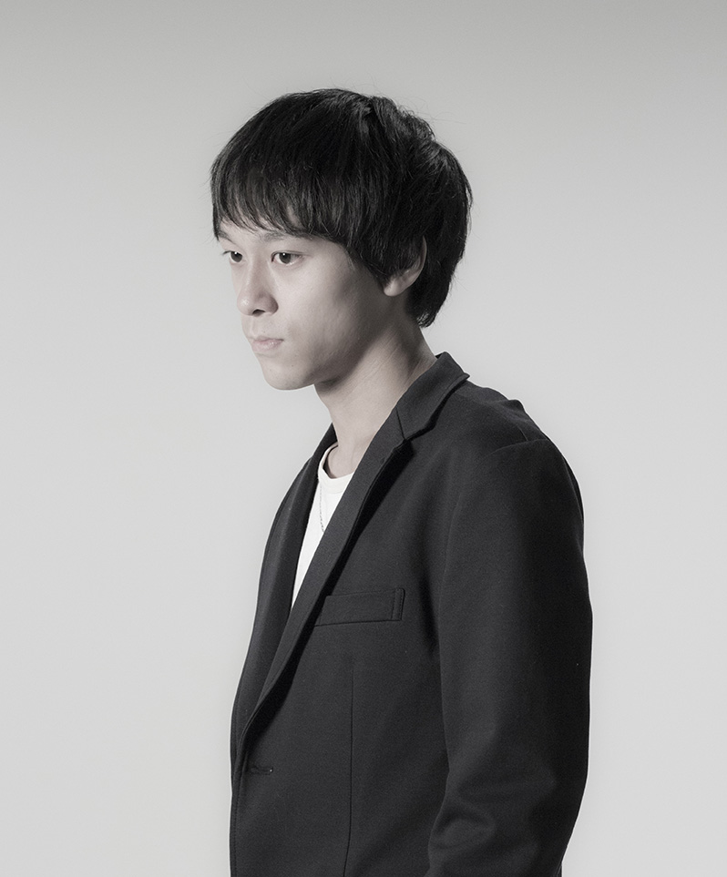

酒井 光太
多摩美術大学
情報デザイン学科 情報デザインコース 2013-2017
1993年、東京都生まれ
2012年、千葉県の高校を卒業
2013年、多摩美術大学 情報デザイン学科に入学と同時に、写真部に入部。 写真を撮り始める
2013年10月、写真展「はみでてん」に参加
その後も写真をはじめ、映像作品などを制作している。
Kouta Sakai
Tama Art University
Information Design Department Interaction Design course
2013-2017
Augest,1993 Born in Tokyo,Japan
March, 2012,Graduated from Chiba Prefecture high school.
April, 2013,The entrance to the Tama Art University Department of Information Design Depertment,and join the club in the photo section. Start taking a photo.
October,2013 Photo Exhibition "HAMIDETEN" at Shibuya of Le Deco Gallery participate.
Then began the photo are also produced and video works.